Introduction
In Ontario, food insecurity is a severe problem since many people and families rely on food bank services to meet their basic needs. Effective policymaking and resource allocation depend on an understanding of the demographic characteristics that underlie the regional distribution of food bank use. In the project, we aim to develop an interactive web map displaying the latest food bank usage data in Ontario for public access, organized according to provincial electoral riding boundaries. The goal is to focus on the regional variations in food insecurity in Ontario by displaying the amount of food banks used per person.
METHODOLOGY
PROJECT WORKFLOW
The project adopted the agile project management method. Agile development was an iterative software development process that prioritized short term outputs that were modified over time in response to client feedback. Over the project course, a substantial quantity of client input was obtained, enabling the team to adjust to changes and involve the client’s requirements in the decision-making process.
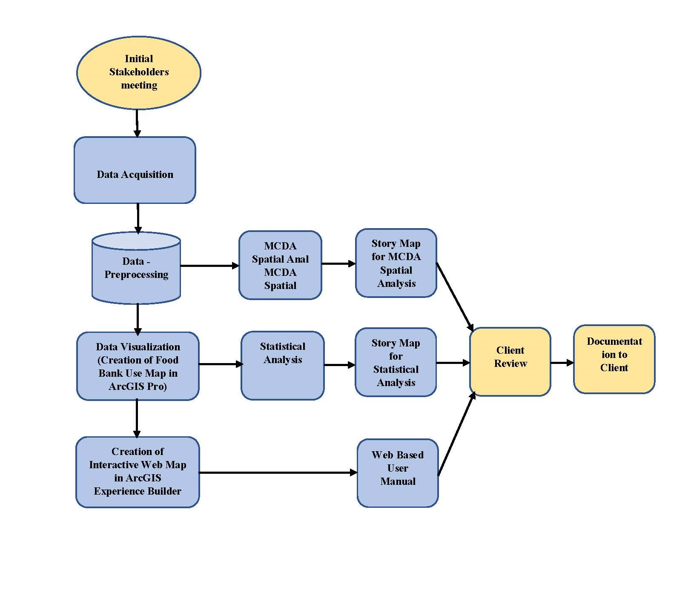
Data Pre-Processing
Geocoding is the process of converting addresses into geographic coordinates, allowing them to
be positioned on a map. This process was accomplished using ArcGIS Pro. To achieve this, a
reference layer with a 6-digit postal code shape file across Ontario, obtained from Scholars
Geoportal, was provided as a reference layer to create the locator.
The "LDU" role in the Create Locator geo-processing tool required mandatory FSA (Forward
Sortation Area) and LDU (Local Delivery Unit) fields. This necessitated splitting the 6-digit postal
code field into the first 3 digits (FSA) and the last 3 digits (LDU). The Add Fields and Calculate
Fields tools were used, with the sample expression “!POSTALCODE![:3]” to extract the first three
digits of the postal codes, creating two new fields: FSA and LDU.
The criteria were imported into ArcGIS Pro as five separate tables. The Geocode Addresses tool
utilized the previously created locator and geocoded the five criteria into x-y coordinates based on
the postal codes field. This process successfully converted the tables into point feature classes.
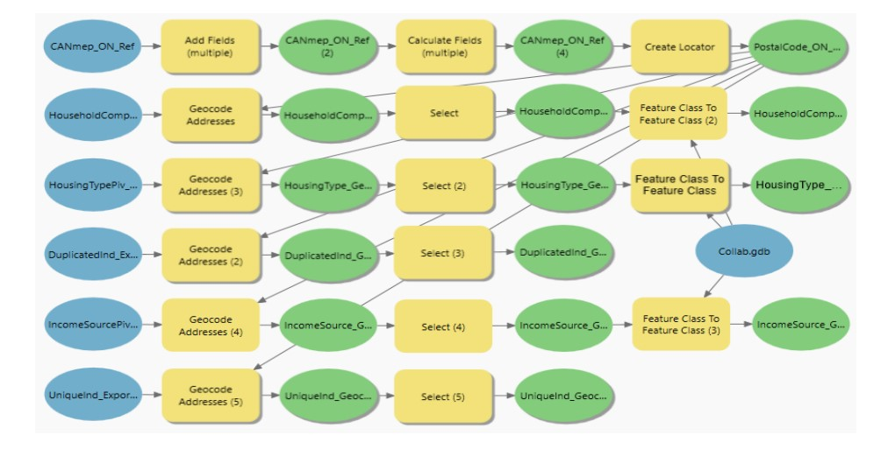
After importing the data in ArcGIS Pro, the projection was adjusted to Lambert Conformal Conic
projection. To facilitate a more accurate analysis of food insecurity through Multi Decision Criteria Analysis, we partitioned the Ontario province into
Northern and Southern Ontario. This division was essential because the population was not
uniformly distributed in the two regions, particularly with the southern section being highly dense.
The northern part of Ontario comprised 9 electoral ridings, while the southern part comprised 112
federal ridings.
Spatial Analysis of AHP MCDA for Food Insecurity
The purpose of this spatial analysis was to identify the area prone to hunger and food insecurity.
After importing the factors in ArcGIS Pro, we first divided the Study area into northern and
southern regions. Secondly, we created raster surface of all five factors using polygon to raster
tool. Subsequently, we categorized the data into a 1 – 9 Analytic Hierarchy Process (AHP) schema
with 1 being the least suitable and 9 being the most suitable conditions, for both the Northern and
Southern Ontario (figure 5). By using a natural break method, the criteria were divided into nine
classes, and the results were rounded up. These suitability ratings were coded to reflect the relative
suitability within each criterion. Steps involve in the spatial analysis are polygon to raster tool, reclassify tool, Analytic Hierarchy Process (AHP) pairwise comparison, Weighted Overlay, calculate field.
Our statistical analysis focused on identifying the electoral ridings with the highest and lowest per
capita food bank use in 2021 and 2023 among a total of 124 ridings. Additionally, we identified
the ridings with the total population and the highest and lowest population in 2021 and 2023. We
also identified the highest and lowest of the Ontario Works Percentages received in 124 electoral
ridings for the years 2021 and 2023.
We calculated for 124 Ontario electoral ridings the average food bank use per capita and the
Ontario Works of 2021 and 2023. Additionally, we computed the percentage increases and
decreases of the average Ontario Works percentage over the two years from 2021 to 2023.
Furthermore, we computed the population growth percentage from 2021 to 2023.
Web Development and Enterprise Technology
Due to our client's lack of an ArcGIS Pro account, we utilized our own account instead.
Subsequently, we will proceed to transfer all the files to our client's ArcGIS account using ArcGIS
Online Assistant.
Upon conducting a spatial analysis of food bank utilization per capita in the years 2021 and 2023
using ArcGIS Pro, Initially, we transferred the web layer from ArcGIS Pro to our Fleming ArcGIS
Online account.
results
Our project adopted a multifaceted approach by creating web maps, experience builder and story maps to effectively address our client's need.
Spatial Analyis
Follwing are the list of output from Multi Criteria Decision Analysis
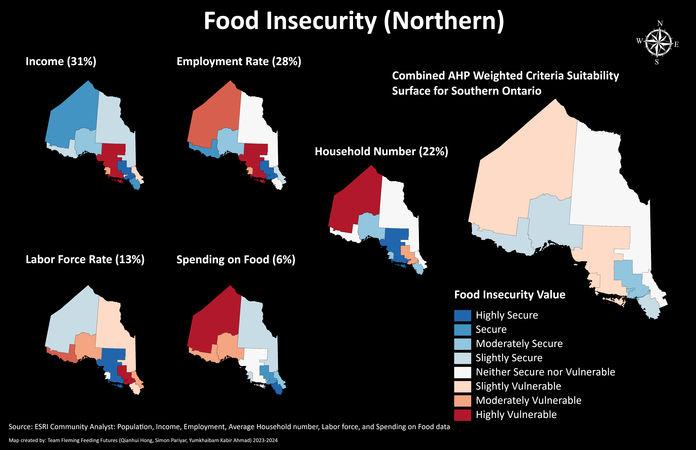
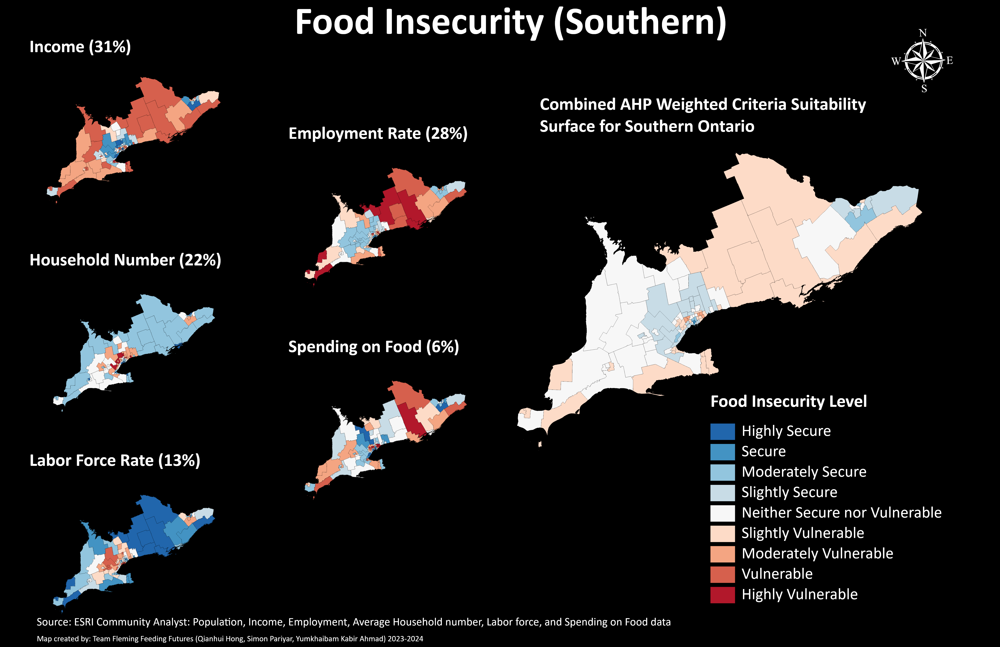
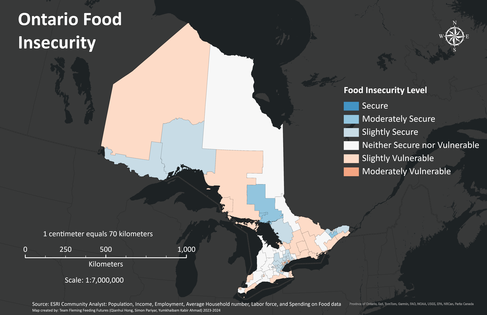
Statistical Analysis
Follwing are the list of output from Statistical Analysis
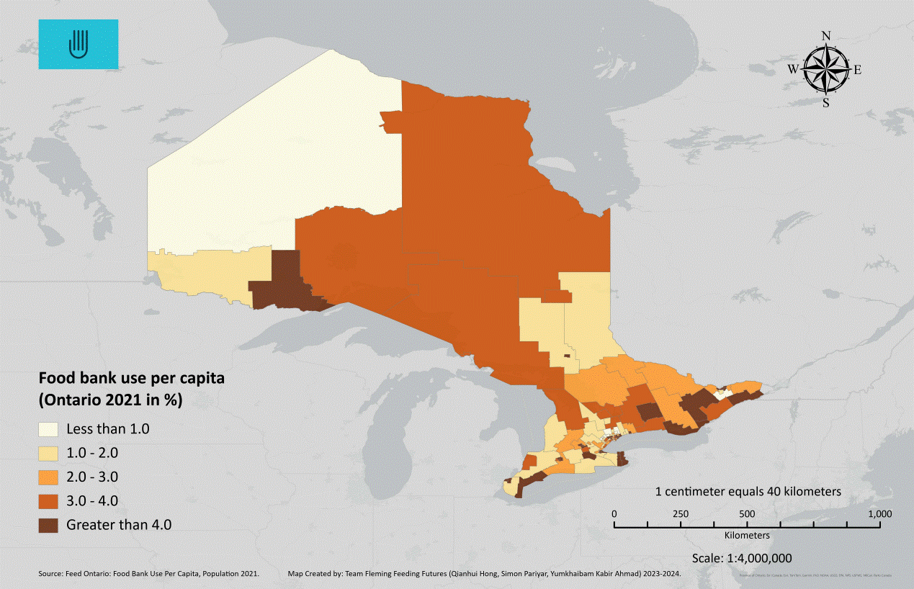
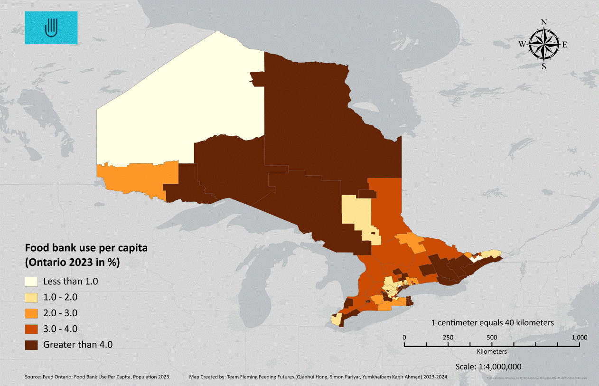
Products
The primary deliverable products of this project are the Experience Builder, Web Map, and Story Maps. The Web Map and Experience Builder demonstrate the food bank usage per capita map for each electoral riding in Ontario, while one Story Map presents statistical analysis of food bank use per capita from 2021 to 2023. Additionally, a second Story Map focuses on spatial analysis to identify areas prone to hunger and food insecurity.
Web Map
This web map shows the food bank usage per capita map for each electoral riding in Ontario.
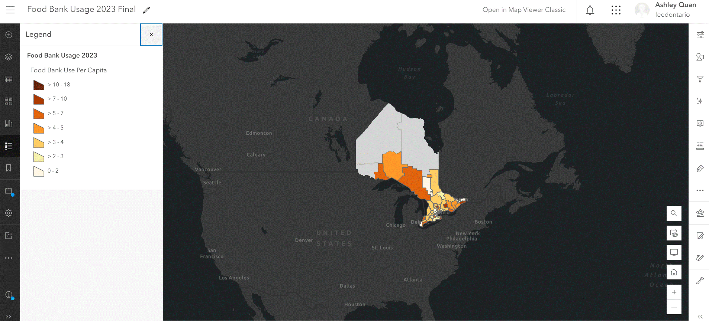
Experience Builder
Link to the Experience Builder
An ArcGIS Experience Builder is developed to showcase the food bank usage per capita in Ontario for 2023. The webpage includes a main page and a user manual page, both formatted in accordance with the Feed Ontario brand guide provided by the client. By integrating interactive features such as dynamic text descriptions, responsive pie and bar charts, and comprehensive maps, the tool facilitates a deeper understanding of food bank usage and associated socioeconomic factors.
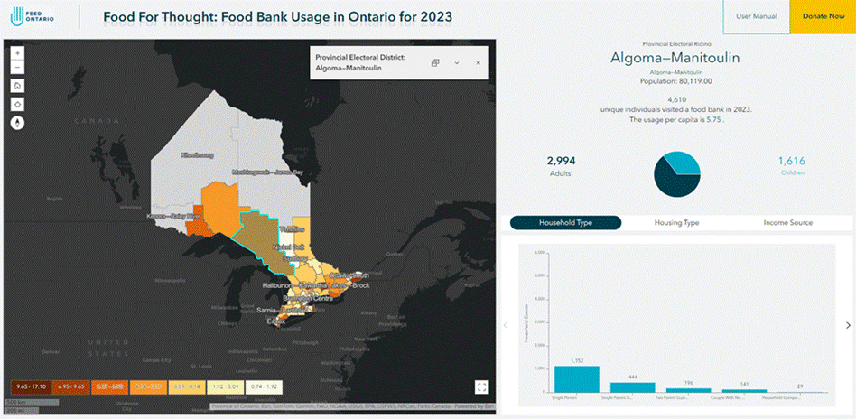
Statistical Analysis Story Map
Link to the Statistical Analysis Story Map
The ArcGIS Story Map visually represents and convey statistical information regarding the per capita usage of food banks in 2021 and 2023. Story Maps provides an interactive and captivating platform for presenting complex data. It helps stakeholders to analyse patterns, pinpointed areas with significant requirements, and facilitated decision-making based on data. Each section provides a detailed analysis of a particular year for the entire province of Ontario, as well as separately for Northern Ontario and Southern Ontario.
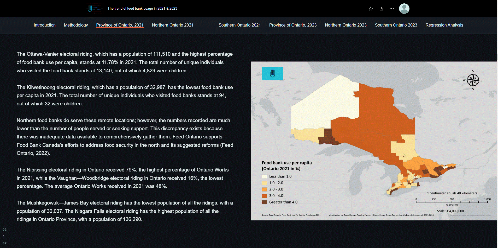
Spatial Analysis Story Map
Link to the Statistical Analysis Story Map
The Story Map visualizes the food insecurity across Ontario at the federal riding level. The story map features map images illustrating the food insecurity surfaces for each individual criterion, as well as the overlay surface for both Northern and Southern Ontario. Additionally, it includes tables displaying the criteria rating framework for the Multi-Criteria Decision Analysis (MCDA) Analytic Hierarchy Process (AHP), and the consolidated decision matrix for the AHP MDA food insecurity pairwise comparison.
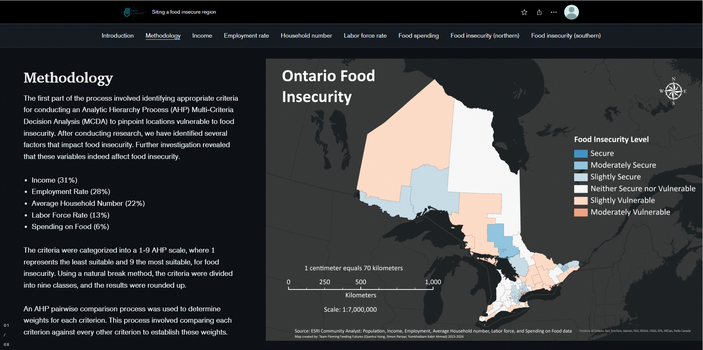
Team

Qianhui Hong
Qianhui holds a Bachelor's degree in biology and environmental science from McMaster University, complemented by a concurrent certificate in GIS.
Furthering her expertise, she enrolled in the Application Specialist program at Fleming College, honing more skills in GIS, including web development, cartography, programming, and database management.
Her passion lies in environmental monitoring, management, and conservation, which she seamlessly integrates with her newfound proficiency.
Email:venusqh123@hotmail.com

Yumkhaibam Kabir Ahmad
Passionate about leveraging Geographic Information Systems (GIS) to understand spatial patterns, solve complex problems, and make informed decisions. With a foundation in GIS principles and techniques, coupled with hands-on experience in data analysis, mapping,spatial modeling, and Web Technology, I bring a dynamic approach to geographical information management.
Email:kabirahamad698@gmail.com
Simon Pariyar
Simon Pariyar is presently pursuing studies in the Geographic Information Systems: Cartographic Specialist program at Sir Sandford Fleming College – School of Environmental and Natural Resource Sciences. He holds a Bachelor's degree in Agricultural Engineering, where his introduction to GIS occurred during his final year project thesis, which focused on visualizing groundwater variability. Subsequently, in his professional endeavors at an Engineering firm called Ink Consult Pvt. Ltd, he gained extensive exposure to the field of Spatial Analysis and Mapping. Simon considers the knowledge and skills acquired through his current course as a significant milestone in his career progression.
Email:cmeepeter@gmail.com